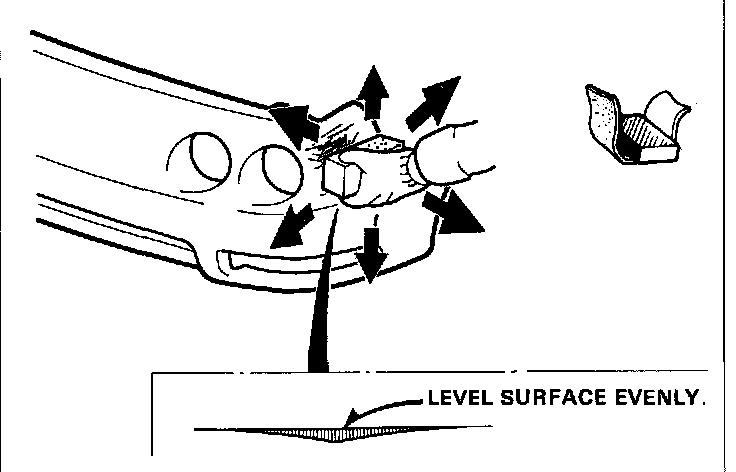
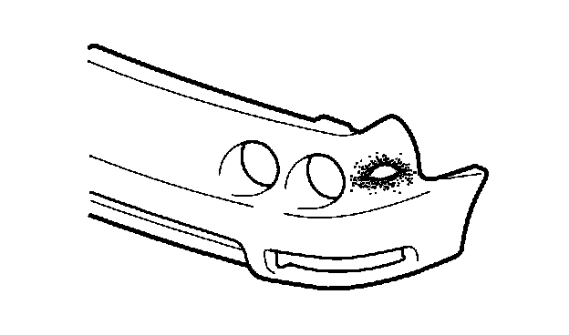
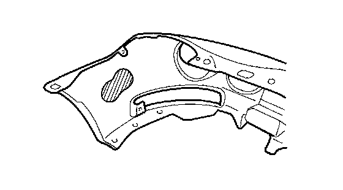
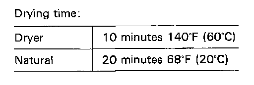
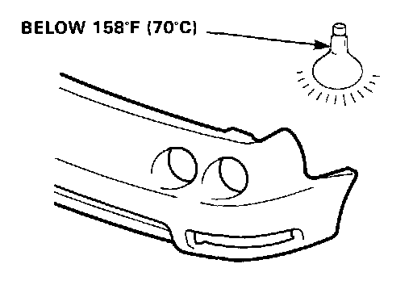
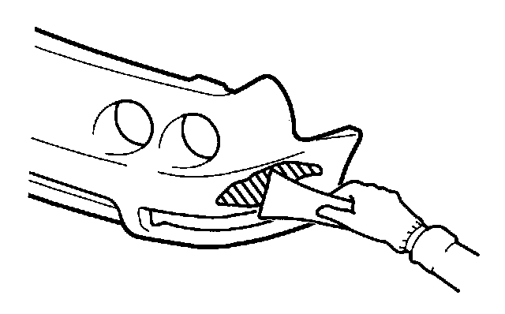
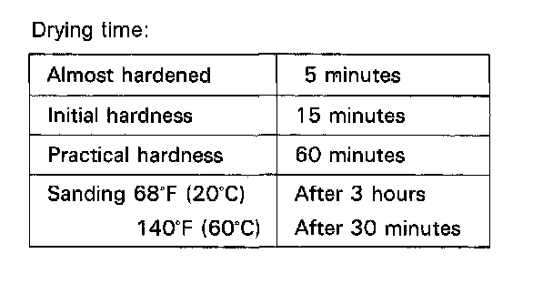
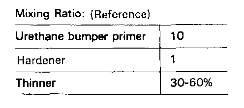
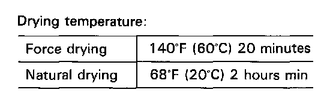
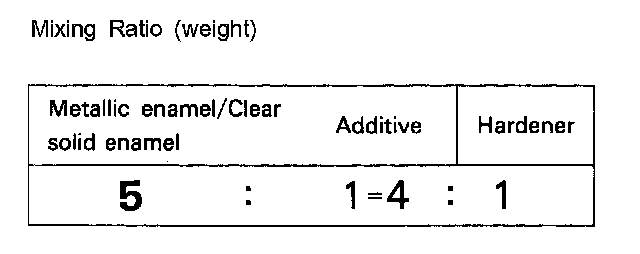

Refinishing Procedures
Refinishing Procedures1. Sanding damaged areas
Shallow scratch:
- Level and finish damaged areas with #240-#400 sandpaper.
- Polish the leveled area with #400 sandpaper.

NOTE:
- Use a flexible block to sand the surface evenly.
- Do not remove too much material.
Deep groove/tear:

- Level and finish burrs and other irregularities with #240 sandpaper. Keep the surface as even as possible.
2. Degreasing/Cleaning
WARNING:
- Do not use high air pressure; use only an approved, 210 kPa (2.1 kgf/sq.cm, 30 psi) air nozzle.
- Wear goggles or safety glasses to prevent eye injury.
- Clean with wax and grease remover and dry with compressed air.
- Wipe off all lint and other foreign particles from the surface with a tack cloth.
NOTE: Be sure to use a tack cloth. Dust and dirt are electrostatically drawn to the surface.
3. Applying bumper primer (clear type).
- Stir thoroughly before applying the primer. Use a spray gun or brush depending on working conditions.
WARNING:
- Ventilate when spraying paint. Most paint contains substances that are harmful if inhaled or swallowed. Read the paint label before opening the paint container.
- Avoid contact with skin. Wear an approved respirator, gloves, eye protection and appropriate clothing when painting.
- Paint is flammable. Store it in a safe place, and keep it away from sparks, flames or cigarettes.
- Cover as wide an area as possible, except for shallow grooves (2-3 coats).
NOTE:
- Do not dilute the primer with thinner.
- Warm the primer if the outside temperature is below 50 degrees F (10 degrees C).

- Apply the primer to the back of the bumper if the damage is a tear or hole.
4. Drying bumper primer.
WARNING: Body parts being dried with an industrial dryer can get hot enough to cause injury.Do not touch parts being dried.
- Dry the primer thoroughly with an infrared dryer or other dryer suitable for the purpose.

- If the damage or groove is shallow, heat the entire surface evenly. Apply heat locally if the bumper is gouged or torn open.

NOTE:
- Use a dryer whenever possible.
- Do not allow temperature to exceed 150 degrees F (70 degrees C) or the bumper will deform
5. Apply filler (BOND QUICK MENDER.)
Mix the mender (A) into the hardener (B) in the ratio of 1 to 1, and stir until they are thoroughly mixed.
-1. Apply the mixture over the damaged area with a putty knife using light pressure.
-2. Even out the surface to match the contour of the bumper.
-3. If there is a hole, cover it with a masking tape from the back, and apply the filler over the outside surface.
After the filler has been dried, remove the tape and apply filler to the side that was taped.

NOTE: Apply filler so it extends over more than the damaged area.

6. Drying filler
7. Sanding filler
WARNING: To prevent eye injury, wear goggles or safety glasses whenever sanding, cutting or grinding.
Wet sand first with #240 sandpaper then with #400 sandpaper.
NOTE: Sand the surface evenly, particularly at the area where the PP resin and mender meet.
8. Degreasing/Cleaning
- Blow off the sanded surface, then clean with wax and grease remover.
WARNING:
- Do not use high air pressure; use only an approved, 210 kPa (2.1 kgf/sq.cm, 30 psi) air nozzle.
- Wear goggles or safety glasses to prevent eye injury.
- Remove all dust and dirt with a tack cloth.
9. Spraying dual-liquid bumper primer surfacer (gray)
NOTE: Use the urethane bumper primer.
WARNING:
- Ventilate when spraying paint. Most paint contains substances that are harmful if inhaled or swallowed. Read the paint label before opening the paint container.
- Avoid contact with skin. Wear an approved respirator, gloves, eye protection and appropriate clothing when painting.
- Paint is flammable. Store it in a safe place, and keep it away from sparks, flames or cigarettes.
Spray the primer surfacer over a wider area than the filler and the exposed surfaces of bumper primer.

NOTE: Spray 2-3 coats to get 20-25 microns of thickness.
10. Drying and polishing
Force dry the primer surfacer with infrared lamps or other industrial dryer.

WARNING: Body parts being dried with an industrial dryer can get hot enough to cause injury. Do not touch parts being dried.
NOTE:
- Use a dryer whenever possible.
- Do not allow the temperature to exceed 158 degrees F (70 degrees C).
-1. After force drying, wet sand the primer surface with#600 sandpaper.
NOTE: Use #600 or finer sandpaper as any paper coarser than this might scratch the surface.
WARNING:
- Do not use high air pressure; use only an approved, 210 kPa (2.1 kgf/sq.cm, 30 psi) air nozzle
- Wear goggles or safety glasses to prevent eye injury.
-2. Air blow the surface to be repaired, then degrease with a wax and grease remover.
-3. Also clean and degrease where masking tape will be attached.
11. Intermediate coating
NOTE: Intermediate coating is recommended for bright colors.
- Use the top coat enamel.
WARNING:
- Ventilate when spraying paint. Most paint contains substances that are harmful if inhaled or swallowed. Read the paint label before opening the paint container.
- Avoid contact with skin. Wear an approved respirator, gloves, eye protection and appropriate clothing when painting.
- Paint is flammable. Store it in a safe place, and keep it away from sparks, flames or cigarettes.
- Mix the additive into the solid enamel color, metallic enamel or pearl enamel color in the ratio of 1 to 5 (by weight).
- Mix the hardener into the mixture of pigment and additive described above in the ratio of 1 to 4 (by weight).
NOTE: Keep the correct ratio, especially of the additive. Excessive additive takes longer to dry.
- Adjust to the proper viscosity for spray by adding the thinner specified for the primer into the mixture of primer additive and hardener.
Viscosity: 68 degrees F (20 degrees C) 11-13 sec.
NOTE: It is not necessary to apply the clear coat.
- Spray 2-3 coats of the top coat enamel to get 15-20 microns of thickness. The primer surfacer (gray) should not show through the top coat.
NOTE:
- Apply the top coat enamel to the repaired surface.
- Apply the top coat enamel to the entire surface of the primer surfacer when replacement is necessary.
12. Degreasing and Cleaning
Air dry the entire surface, then clean with wax and grease remover (for USA usage-Dupont 38125 Enamel Reducer).
NOTE: For shading or spot painting, polish the area with a polishing compound. Also sand with a #1500 paper to make a better bonding surface for the paint.
13. Masking
- Remove all existing masking paper, then mask with new paper.
- Use a heat resistant type masking tape (SCOTCH TAPE) where tape is attached directly to the bumper.
- Use brown paper or masking roll paper to cover.
NOTE:
- Mask the area completely to prevent overspray.
- Protect resin parts with aluminum foil under the brown paper or masking paper to prevent damage due to heat during baking.
14. Top Coating
- Air dry and degrease the surface before spraying the paint. Also clean the surface with a tack cloth.
WARNING:
- Ventilate when spraying paint. Most paint contains substances that are harmful if inhaled or swallowed. Read the paint label before opening the paint container.
- Avoid contact with skin. Wear an approved respirator, gloves, eye protection and appropriate clothing when painting.
- Paint is flammable. Store it in a safe place, and keep it away from sparks, flames or cigarettes.
- Remove dust and dirt from the surface to be coated with compressed air, then use a tack cloth.
- Use a strainer when filling the cup with paint.
- Spray the paint evenly over the surface so the replacement part is completely covered.
- For application of the top coating refer to step 11 Intermediate coating."
NOTE: Do not try to cover the surface with one heavy coat. Apply several thin coats.
- With solid color (2-coat type), metallic color and pearl color enamels, allow final coat to flash-off (5-20 minutes) before applying clear coat.

- Mix the additive into the clear in the ratio of 1 to 5. Adding the hardener and adjusting viscosity should be done the same way as described on the previous.
Viscosity: 68 degrees F (20 degrees C) 13-15 sec.
15. Drying top coat
WARNING: Body parts being dried with an industrial dryer can get hot enough to cause injury. Do not touch parts being dried.
- Before force drying, let it air dry for 5-10 minutes.
- Force dry the sprayed surface under the infrared lamps for 60-90 minutes.
- Keep the drying temperature between 140 degrees F (60 degrees C) and 158 degrees F (70 degrees C).
NOTE: Take care not to let the heat deform the part during the drying process.
16. Polishing and Buffing
- Let the paint dry gradually, then polish the surface carefully using a polishing compound and sponge buff.
- To remove lint or dirt, wet sand the surface with #2000 or finer paper first, then polish with compound.
NOTE: Polish all roughness caused by sanding thoroughly. To do this, first polish with very fine compound, then with ultra fine compound.
- After polishing, remove the masking paper and tape and wash the entire vehicle thoroughly.